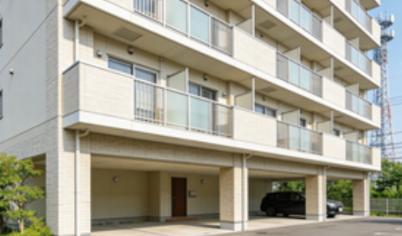

西京区（Nishikyo-ku）賃貸情報
西京区は京都西部の郊外に位置するエリアで、1976年に右京区から分離して誕生した比較的新しい行政区。桂駅周辺を中心に住宅開発が進み、広い敷地のマンションや一戸建てが多く、ファミリー層に人気の住宅地として発展している。
区内には京都大学桂キャンパスや京都産業大学などがあり、学生層も一定数居住している。また京都市営地下鉄烏丸線が通っており、市中心部への通勤時間が30分程度と交通利便性も良好。大型ショッピングモールやスーパーが充実しており、日常生活に必要な施設が揃っているのも特徴。
西京区の特徴
- 特徴：新しい住宅地でファミリー層が多く、大学がある文教地区
- メリット：物件が広い・生活施設が充実・交通利便性が高い・賃料がリーズナブル
- デメリット：市中心部から離れている・夜間の娯楽施設が少ない
- 賃料例：1K約55,000円〜、1LDK約80,000円〜、2LDK約100,000円〜、一戸建て約180,000円〜
推奨物件タイプ

桂駅徒歩5分 2LDK：約105,000円。築5年のマンションで、南向きの部屋で採光が良い。バルコニー付きで駐車場が付属する。
京都大学桂キャンパス近隣 1K：約58,000円。学生向けのアパートで、家電付きで入居しやすい条件。近隣にコンビニと食堂がある。
川岡地区 一戸建て：約190,000円。庭付きの3LDK物件で、学区内に位置し子育てに適している。駐車場が2台分あり家族層に最適。